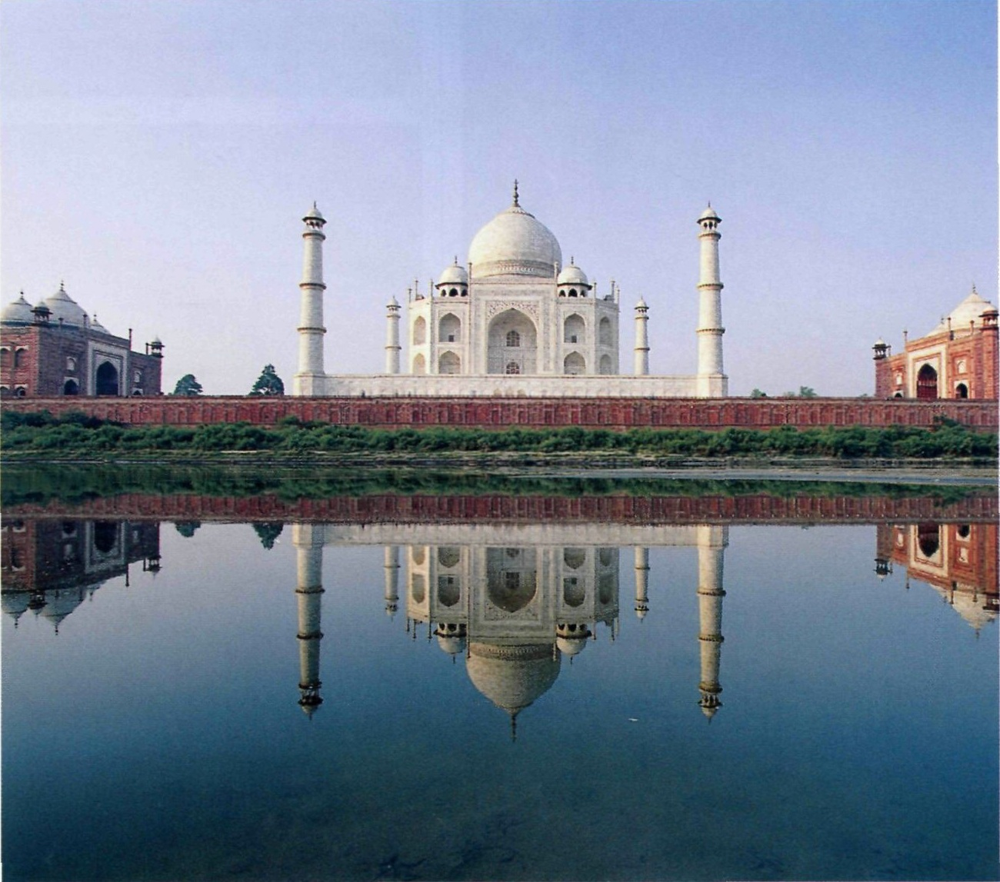
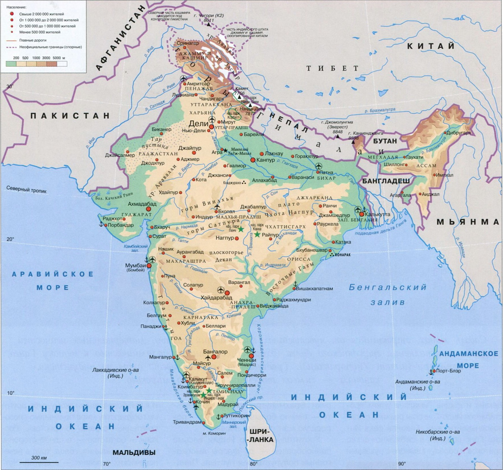
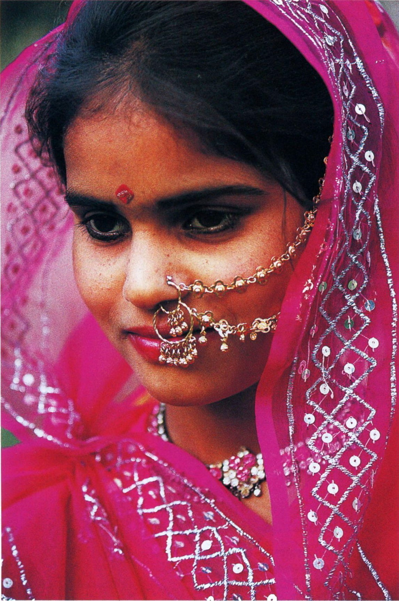
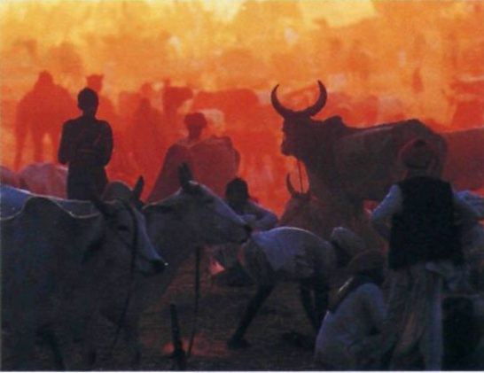
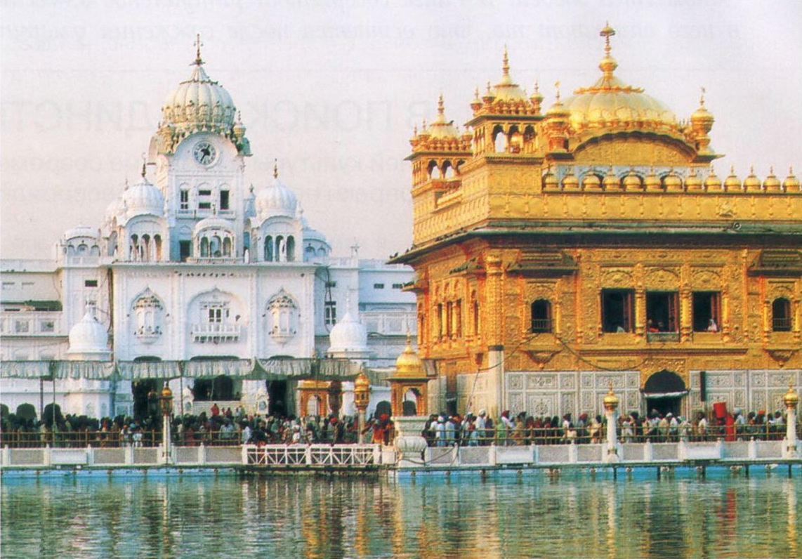
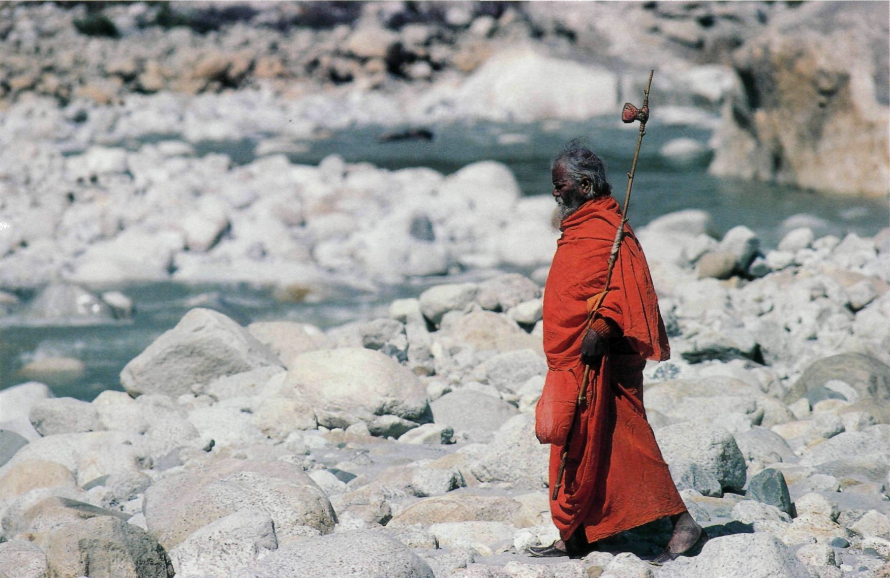

- На полуострове Индостан зародились четыре духовных учения — буддизм, индуизм, джайнизм и сикхизм. Причем буддизм стал поистине мировой религией.
- До самого конца XIX в. Индия была монопольным поставщиком алмазов на мировой рынок. Несравненной чистоты алмаз «Кохинор», сияющий в короне британских монархов, само собой, родом из Индии.
- По статистике более половины индийских женщин выходят замуж до 18 лет, и, как это заведено, — по предварительному соглашению родителей жениха и невесты. Разводы в этой стране отнюдь не запрещены, но количество крепких браков, на взгляд европейца, просто невероятно — 93%.
ИНДИЯ
Великая душа

Мавзолей Тадж-Махал в Агре, шедевр индо-исламской архитектуры эпохи Великих Моголов, один из самых популярных символов Индии, объект Всемирного наследия ЮНЕСКО.
СОПРОТИВЛЕНИЕ БЕЗ НАСИЛИЯ
Знаменитый индийский писатель Рабиндранат Тагор впервые в 1915 г именовал Мохандаса Карамчанда Ганди титулом Махатма, что на санскрите означает «Великая душа». Сам Ганди считал себя недостойным такой чести.
- Дели: Национальный музей, Красный форт, Великая мечеть; Зал приемов Великих Моголов; дворец Ранг-Махал; Жемчужная мечеть, башня XII века Кутб-Минаре, там нержавеющая веками металлическая колонна — одно из чудес света, зоопарк
- Калькутта;
- Мумбаи (Бомбей): мечеть Хаджи Али, Музей истории Бомбея, Музей принца Уэльского, здание старого Монетного двора, аквариум Тарапоревала, пещеры Канхери;
- Джайпур: астрологическая обсерватория;
- Гоа: пляжи, монастыри и крепости в колониальном португальском стиле;
- Официальное название: Республика Индия.
- Столица: Нью-Дели (321 883 чел., 2006 г.), Национальный столичный округ Дели — 12 565 901 чел. (2010 г.)
- Крупнейшие города: Мумбаи, Дели, Бангалор, Калькутта, Ченнаи (Мадрас), Хайдерабад, Ахмадабад.
- Денежная единица: индийская рупия.
- Религии: индуизм (80,5%), ислам (13,4%), христианство (2,3%), сикхизм (1,9%) буддизм (0,8%) и др
- Язык: хинди, английский и еще 21 официальный язык.
Преобладают четыре типа: субтропический муссонный, тропический влажный, тропический сухой, высокогорный. Средние температуры в январе: +13*С в Дели и +25*С в Ченнаи. Средние температуры в июле: +31*С в Дели и Ченнаи
Индия, страна богатейшей и древнейшей истории, пережившая за тысячелетия своего существования не один культурный расцвет, с XVI в. стала предметом колониальных претензий сразу нескольких европейских государств. Англичане как колонизаторы оказались успешнее португальцев, французов и голландцев: в середине XVIII в. Британская Ост-Индская компания захватила Бенгалию, а сто лет спустя, к 1856 г., контролировала значительную часть Индии. В 1857 г вспыхнуло народное восстание сипаев, переросшее в войну за независимость. Восстание было подавлено, Британская Ост-Индская компания ликвидирована, а Индия перешла под прямую юрисдикцию английской короны. В 1885 г в стране была учреждена первая политическая партия Индийский национальный конгресс, составивший оппозицию колониальному режиму и выступавший за национальное равноправие. В 1915 г национально- освободительное движение в Индии возглавил Махатма Ганди (1869-1948), вернувшийся из Южной Африки, где он также боролся за права индийцев и где разработал и впервые применил тактику ненасильственного сопротивления — сатьяграху. В буквальном переводе с санскрита сатьяграха означает «упорство в истине». В основе концепции этой борьбы за независимость было гражданское неповиновение и несотрудничество с несправедливой правящей системой. Сатьяграха подразумевала готовность народа переносить боль и страдания и должна была, по мысли Махатмы Ганди, воздействовать на благоразумие и совесть противника. Он призвал все население страны перейти на самообеспечение, отказавшись от английских товаров, в частности от дорогих тканей, игнорировать несправедливые законы. Сам Махатма сел за прялку, смастерил себе одежду и обувь. Так традиционная индийская прялка — чаркха стала символом сатьяграхи и национального самоопределения. Поначалу англичан это смешило, но, начав нести убытки, они поняли, насколько серьезна эта борьба. «Моральное влияние, которое Ганди оказал на мыслящих людей, является намного более сильным, нежели кажется возможным в наше время с его избытком грубой силы, — писал Альберт Эйнштейн о лидере индийского движения за независимость. «Возможно, грядущие поколения просто не поверят, что такой человек из плоти и крови ходил по этой грешной земле». В августе 1947 г Индия получила долгожданную независимость, но напряженность между приверженцами индуизма и ислама была столь высока, что произошло разделение территорий Британской Индии на два государства: Индийский Союз и Пакистан. Раздел сопровождался кровопролитными столкновениями между индусами, сикхами и мусульманами, а также крупнейшей в истории XX в. массовой миграцией населения. До сих пор отношения между Индией и Пакистаном остаются напряженными.

Полуостров Индостан, основную часть которого занимает Индия, неслучайно называют Индийским субконтинентом. Индийская континентальная плита на протяжении сотен миллионов лет двигалась через океан на север, пока не произошло ее столкновение с евразийской плитой. В результате этого столкновения образовались Гималайские горы, которые сейчас ограничивают Индию с севера и северо-востока.
- Площадь: 3 287 240 км2.
- Население: 1 180 588 000 чел. (2010 г.)
- Самая высокая точка: Канченджанга (8586 м, Гималаи).
- Побережье: 7517 км, из них 5423 км принадлежат континентальной Индии и 2094 км — Андаманским, Никобарским и Лаккадивским островам
Промышленность: горнодобывающая, сталелитейная, нефтяная, легкая (текстильная и кожевенная), химическая, цементная, автомобилестроение, пищевая, электроника, фармацевтика. Сельское хозяйство: рис, пшеница, чай, сахарный тростник, картофель, хлопчатник, джут; животноводство.

Женщина в Индии считается средоточием активных сил природы и творческой энергии, способной созидать и разрушать, но раскрывающейся в полной мере лишь после замужества. Поэтому предназначение индианки — быть женой и матерью.
НЕПРЕРЫВНОЕ ДВИЖЕНИЕ
В отличие от других развивающихся стран, в Индии с пятидесятых годов XX в. отмечается неуклонный экономический рост
Для поколения хиппи 1960-х годов поездка в Индию имела не меньшее значение, чем для католика визит к Папе Римскому в Ватикан. Сегодня полуостров Индостан для европейцев прежде всего отличное место для проведения отпуска, в течение которого можно посетить такие достопримечательности, как беломраморный мавзолей Тадж-Махал в Агре, сикхский Золотой храм со священным водоемом бессмертия в Амритсаре, храмы Кхаджурахо с Камасутрой, застывшей в камне, или отдохнуть на белых пляжах Гоа. Гордость страны ее древнейшая культура, многочисленные величественные памятники прошлых веков, богатейшие природные условия и теплый климат. Почти 60% территории страны занимают горные районы. На северо-востоке вздымается стена Гималаев, центральную и южную часть полуострова занимает плоскогорье Декан, ограниченное горными цепями Западных и Восточных Гат Севернее Декана и южнее Гималаев углом простирается Индо-Гангская равнина с полноводными реками. Главная река Индии Ганг вбирает в себя множество притоков и образует вместе с рукавами реки Брахмапутры огромную дельту самую большую в мире, — поросшую мангровыми лесами. Растительный мир Индии весьма разнообразен от флоры высокогорных полупустынь и пустынь Пенджаба и Раджастхана до джунглей Ассама и почти средиземноморской растительности Гоа. Несмотря на то что почти вся территория страны освоена человеком (кроме отдельных труднодоступных районов), животный мир страны все еще удивительно богат Одних только видов млекопитающих здесь водится 7,6% от общего количества на Земле, а по количеству змей (около 240 видов) Индия побила все рекорды. Однако 172 вида животных находятся под угрозой вымирания. Среди них и знаменитый бенгальский тигр. Во второй половине XX в. в Индии был принят ряд законов о защите дикой природы, и в настоящее время здесь существует более 500 национальных парков и заповедников. Индия — страна удивительного географического и национального разнообразия, множества языков и диалектов. И к ней более чем к какому-либо другому государству мира применимо словосочетание «страна контрастов». Роскошь и богатство — с одной стороны, нищета, страдания, голод, труд в нечеловеческих условиях — с другой. Четверть населения Индии живет за чертой бедности несмотря на то, что это одна из наиболее экономически развитых стран мира, которая обладает огромными запасами полезных ископаемых и может похвастаться передовыми технологиями в промышленности.

В индуизме коровы почитаются как священные животные. Во многих штатах Индии существует запрет на их убийство.

Контрасты Индии, которые можно наблюдать на берегах Ганга, шокируют: прямо возле великолепных дворцов в реку сбрасывают отходы, падаль животных и фекалии.

Садху, монах, отрекшийся от чувственных наслаждений (камы), материальных ценностей (артхи) и исполнения гражданского долга (дхармы), совершает паломничество к истоку Ганга, в Ганготри (штат Уттаракханд). Традиционная одежда цвета охры по индуистским канонам — символ отречения от всего мирского.